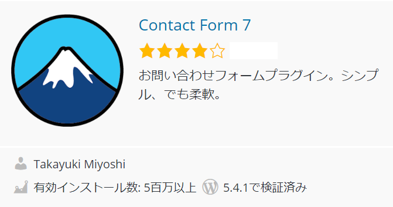
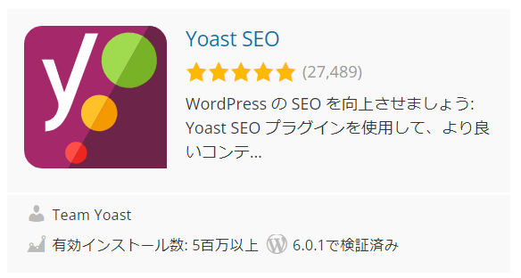
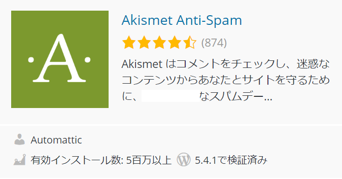
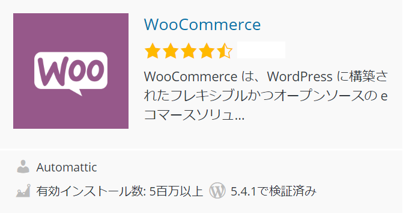
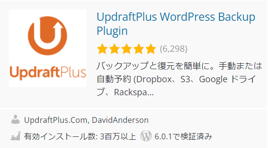
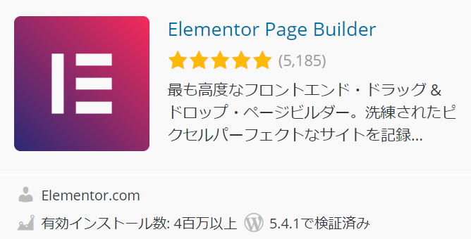
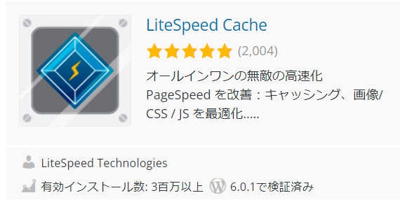

| Contact Form 7 | お問合せフォーム |
|---|---|
| Yoast | アクセス数充実 |
| Akismet | コメントチェック |
| WooCommerce | eコマース |

お問合せフォームを設置してくれるのが「Contact From7」になります。 簡単に設置できるだけでなく、フォームを修正することも出来ます。
ラジオボタンなどを付けてアンケートが出来たり、 相手がメールを送る前に画像チェックを行うなど、本人認証をつけることも出来ます。

SEO対策のプラグインとして最も導入されているのが、このYoastSEOになります。 記事のタイトルやメタタグを設定できるだけでなく、サイトマップの生成など 様々な対策を行ってくれるプラグインになっています。

このプラグインはワードプレス導入時に既に入っているプラグインになります。 そのため自分で導入していなくとも最初から入っています。
ワードプレスでは記事を書くとコメントが付けられるようになります。 迷惑コメントも多く記事によっては何十個といったコメントが付きますので 設定しておきたいプラグインになっています。

ネットショップを作りたい人向けのプラグインになります。 このプラグインによってワードプレスでネットショップ開設が出来るようになります。
ショッピングカートはもちろんのこと決済や配送にも対応しています。 WooCommerceのページを読むと世界の30％を超えるネットショップがこのプラグインによって 作られているとされています。
| Updraft Plus | データバックアップ＆復元 |
|---|---|
| Elementor Page Builder | ページビルダー |
| LiteSpeed Cache | キャッシュ設定 |

バックアップ系の復元プラグインで人気なのがUPdraftPLUS（アップドラフトプラス）になります。 日程間隔を決めてバックアップすることが出来ます。

海外で特に人気になっているのがページビルダーになります。 自分でワードプレスのデザインなど作りたい人におすすめと言えます。
ただし、日本の場合は人気テーマ自体にページビルダーが入っているテーマもあります。 各テーマと違いを良く調べてから導入しましょう。

キャッシュ設定を調整してページの読込み速度を上げてくれるのがLitespeedcacheになります。 基本的な機能についてはXginxやApacheであっても利用することが出来ます。
プラグインを入れることでプラグイン同士のデータがぶつかってしまってエラーの原因になってしまうこともあります。
また、数多くのプラグインを入れすぎると読込み速度が遅くなってしまうこともあります。 10個以上など、あまりに多くの数のプラグインを入れるのは推奨されていません。
プラグインは多くのことが出来る一方で設定が難しいものもあります。プラグイン自体の設置はインストールするだけで出来ますが、 設定や操作については、マニュアルをよく読み込むことが必要になります。
キャッシュ系プラグイン、SEO系プラグインなど同系統のプラグインは出来れば1つだけにしておきましょう。 多くのプラグインを入れるのと同様にエラーの原因になります。
プラグインを導入することでバックアップやSEO対策と言った専門的なことも簡単にできるようになります。
ただし、

demiglaze
Web制作を始めて約19年になります（HTML/css、Photoshop、Webマーケティング）。2005年から当サイトの運営を開始。 これまでに300個以上のドメインを取得、10社を超えるレンタルサーバーを利用してきました。